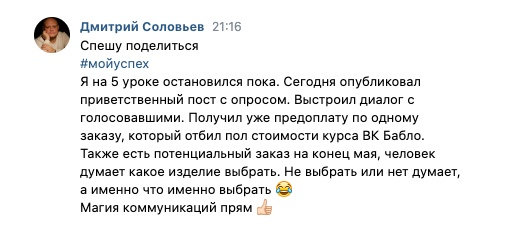
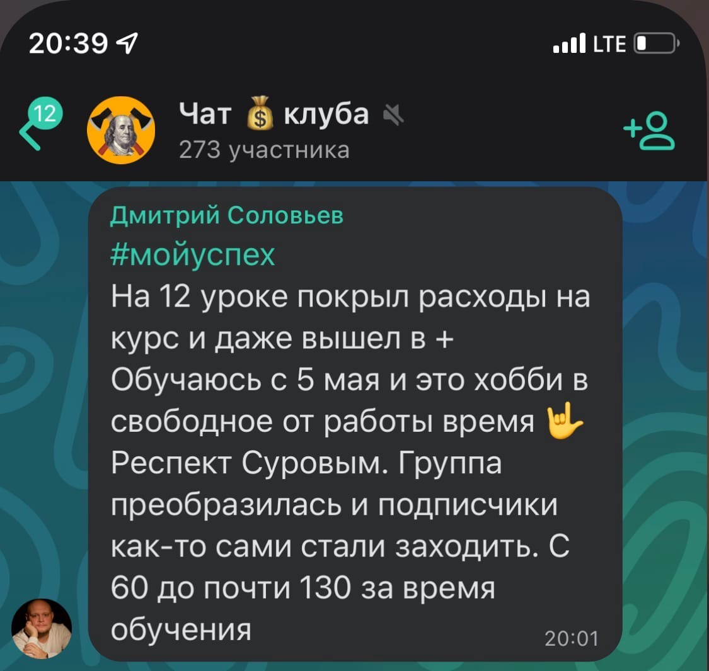
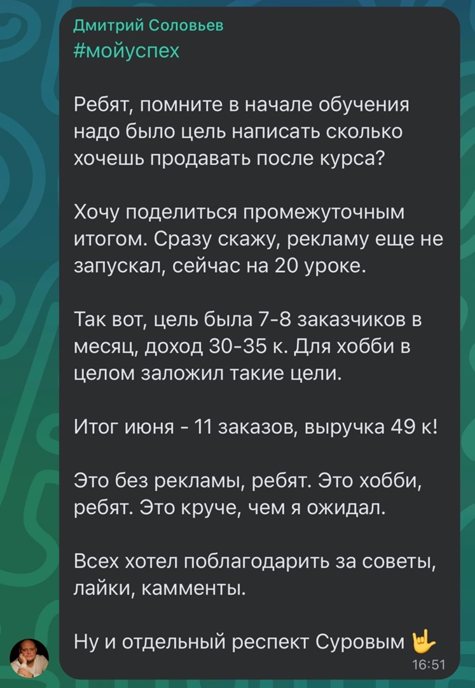
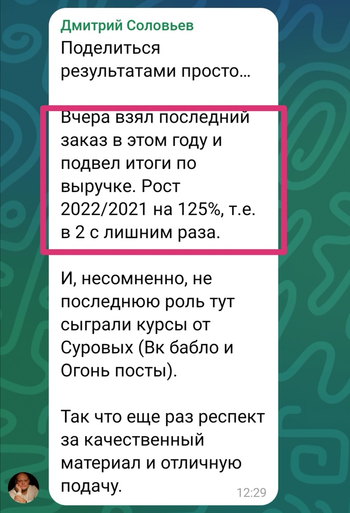
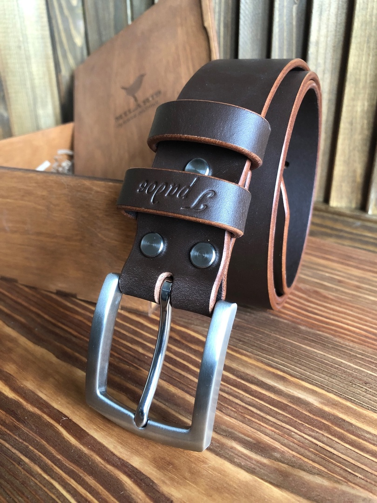
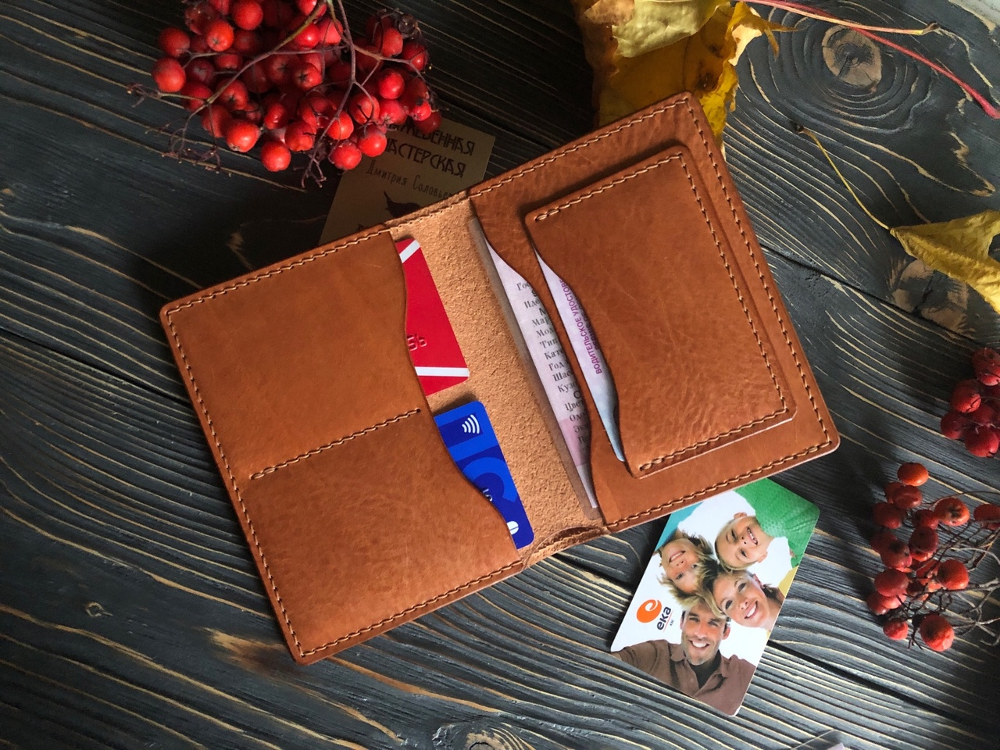
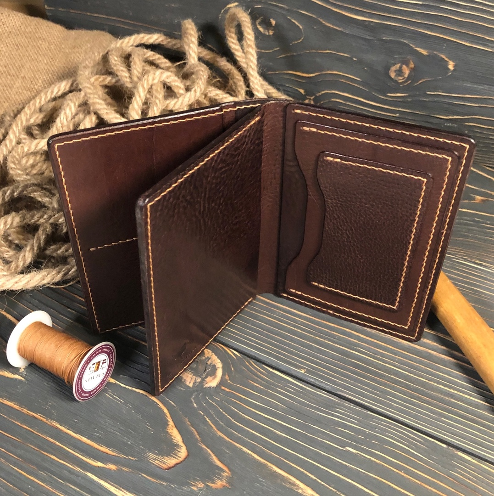
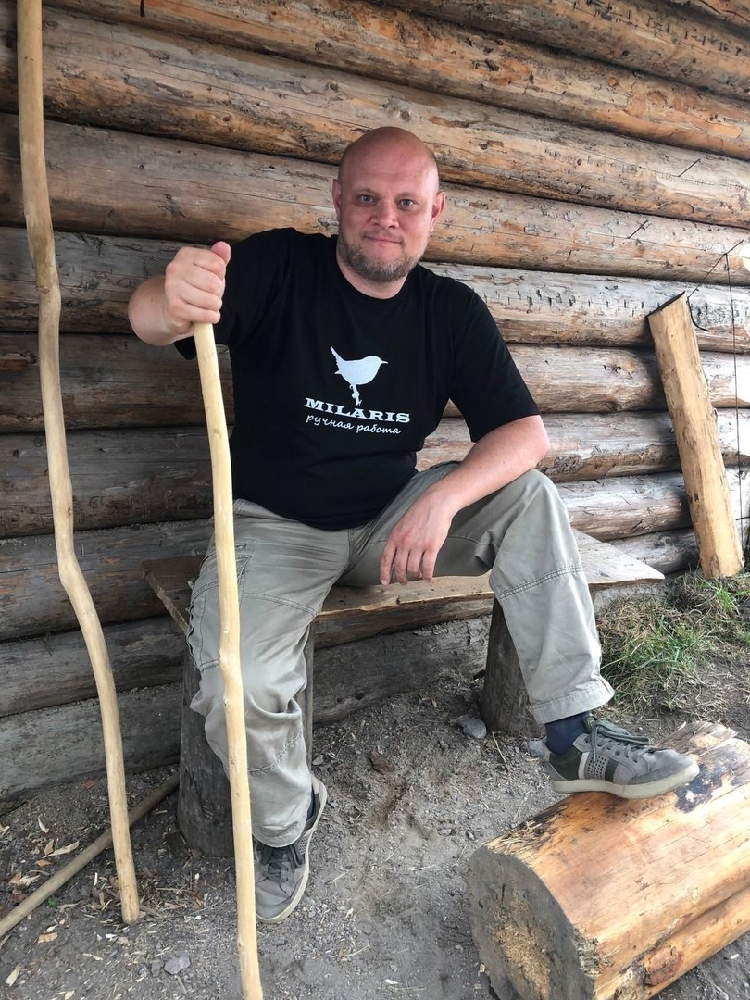

Давай я покажу тебе путь кожевника.
Дима Соловьев:
– на 5 уроке курса "ВК-Бабло" получил первых клиентов

– на 12-м отбил полностью стоимость курса;

– на 20-м еще даже без рекламы за месяц получил доход почти 50 тысяч.

Для Димы это хобби, а не основная работа.
Однако, это его путь и результат. Мы лишь дали ему нужные инструменты.

А вот интервью с Димой.
— Расскажи, что было до курса, какой средний доход был в месяц? Сколько клиентов?
— Тебе повезло) Веду подробный учет. Ща разложу за 2021 год. На курс я пошел весной 22-го.
За 21 год было 27 заказов. Общий доход (выручка) за год 100,5 кило. Отдельно отмечу, что это хобби. Все делалось на лайте.
— Вайййй, в натуре мне круто очень так повезло))
Какие сложности были во время обучения на курсе? Насколько сложно было учиться? За сколько прошел обучение?

— Сложностей как таковых не было. Разве что проблема со свободным временем. Ну и собственная лень. Приходилось себя подпинывать. Обучение я начал примерно в мае, к концу лета завершил. Отпуск, кстати, дал много тем для постов. Так что можешь рекомендовать ребятам, кто откладывает на после отпуска, категорически этого не делать. А наоборот.
— Ты ведь проходил курс на тарифе Все сам, скажи, а как думаешь, с куратором было бы легче? Добавило бы тебе может мотивации и пинков?
— Мне - нет. Поскольку есть основная работа. Ненормированный раб. день и все такое. Комфортно было самому планировать занятия и сроки.
— Какие сейчас действия делаешь для привлечения клиентов? Как часто пишешь посты? Запускаешь ли рекламу?

— Посты стараюсь не реже 2-3 штуки в неделю. Рекламу в последние месяцы отключил, тк и без нее заказов хватает. Но здесь важно понимать хватает ДЛЯ ЧЕГО. Ведь кому-то этого и не хватит. Если это был бы основной источник дохода, тогда заказов не хватало бы. Но тогда было бы больше постов, больше активностей, больше продаж и заказов. Все взаимосвязано. Сейчас я работаю на основной работе и всегда имею заказ-другой с запасом по срокам. Это позволяет заниматься ремеслом в удобное время, развивать группу, без какого-либо ущерба прочим делам.
Потихоньку набирается база лояльных ценителей моих работ. Достаточно много тех, кто возвращается за новыми заказами.
— А можешь поделиться, как изменилась жизнь, когда увеличился доход? Может что-то купил себе? Съездил в путешествие? Что-то смог сделать, чего раньше не мог позволить себе)
— Слушай, здесь я, наверное, не лучший пример. Всё-таки основной источник дохода у меня иной. Поэтому с т/з дохода - кардинально никак не изменилась жизнь. А вот с т/з душевного комфорта – здесь можно сказать о том, что появился некий психологический комфорт.
Работа по найму когда-нибудь заканчивается и человек остается один на один с собой. И вот имея хобби, которое уже приносит какой-никой доход, имея скилл как это продавать и развивать, человек чётко понимает, что он будет дальше делать и куда направит свой высвободившийся временной ресурс.
Отвечая на вопрос “что я смог сделать?” Я смог представить и осознать то, что качество моей жизни после окончания работы по найму будет лучше, чем у того, кто при прочих равных не имеет хобби, которое можно монетизировать.

— Всё, остался только вопрос, сколько сейчас зарабатываешь? Сколько в среднем в месяц? Сколько клиентов? И вот примерно сколько за год было прошедший заработано?
— За 2022 год статистика такая: 57 продаж, общая сумма дохода 230 к. Без напряга, вечерком или по выходным, в охоточку. По сути, рост в 2 раза как по натуральным так и по фин.показателям.
Почти без рекламы.
— Что посоветуешь тем, кто сомневается?
— Ни в коем случае не отдавать денег за курс Женьки Брун, если тебя устраивает твой уровень дохода от ремесла! А если хочешь увеличить - тут без вариантов! Тебе на ВК-бабло))
— Спасибо большое за твои ответы, твой позитив)))

Какой результат будет у тебя, зависит от тебя. В любом случае, разбираться в маркетинге и продажах нужно, ибо без этого о твоих талантах никто не узнает.
В курсе "ВК-Бабло":
- 28 уроков;
- доступ навсегда;
- учишься в своём режиме, в удобное время;
- никаких 3-х часовых вебинаров онлайн, все уроки в записи со скринами, примерами, и постоянно обновляются;
- чат поддержки с единомышленниками, кураторами и мной;
- ежемесячные онлайн встречи в зуме, лично со мной, чтобы разобраться по максимуму;
- можно пройти курс за месяц, среднее время прохождения 3 месяца.
И цель не в том, чтобы пройти все уроки, а в том, чтобы получить результат. Как видишь, его можно получить на разных этапах. Уже с первых уроков я даю инструменты, чтобы у тебя как можно быстрее появилась стабильность.